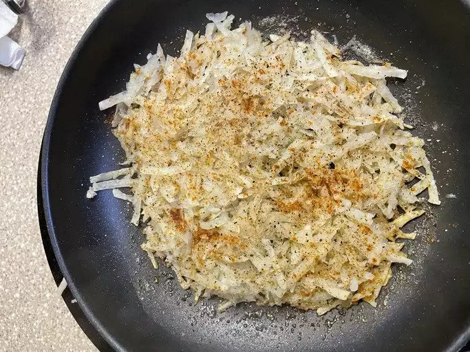

Classic Hash Browns

Description
This easy homemade hash brown recipe produces the crispiest results with just a few simple ingredients.
Ingredients
- Potatoes: A starchy potato, such as the russet potato, is perfect for crispy hash browns.
- Butter: You'll need three tablespoons of clarified butter — here's how to make it at home.
- Seasonings: These flavorful hash browns are seasoned with cayenne pepper, paprika, salt, and pepper.
Steps
- Shred the potatoes into cold water, stir, drain, and dry well.
- Cook potatoes in butter, season, and continue cooking until a crust forms on the bottom.
- Flip and/or stir until the potatoes are browned and crusty all over.